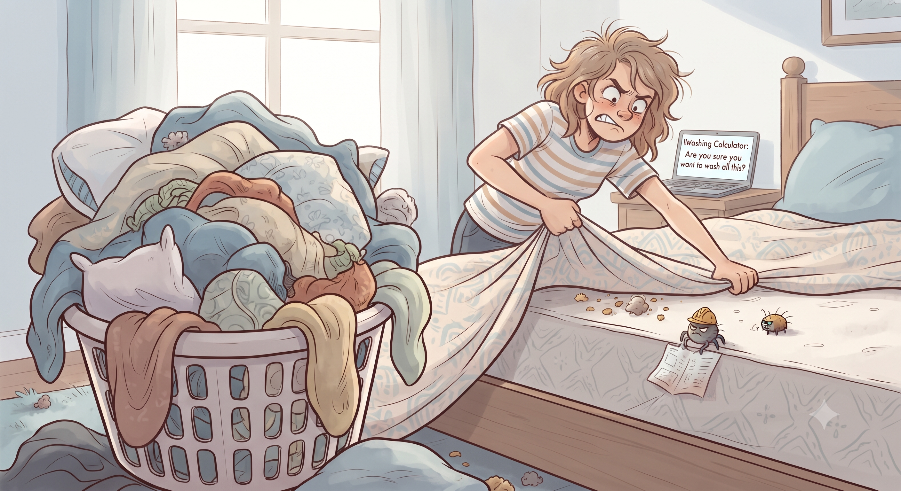

Have you ever wrapped yourself tightly in a bed sheet, tucked your feet in, and stared at the ceiling for some time?

How’s your bedsheet doing? Quite bad! But you acknowledged it's been way too long, and then promptly crawled back under it anyway?